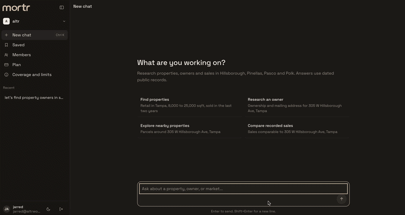

01 · Owner lookup
Start from an address. Get who owns the building, the mailing address, the parcel ID, and every other address tied to that parcel.
mortr is a chat for Florida property records. Ask about an address and get the owner, parcel, other addresses on that parcel, recent comps, and (where the data exists) securitized loan context. Built for CRE brokers and analysts, plus property managers and lenders who want owner, parcel, comp, and debt research without jumping between county sites.
Coverage today is Hillsborough, Pinellas, Pasco, and Polk. Answers use dated public records, not a live or real time feed.
A property owner lookup in Florida usually means opening a county site, reading a parcel card, then hunting for related addresses. mortr keeps that work in one chat: owner, mailing address, parcel ID, and every other address tied to that parcel.

The demo uses dated public records. Figures are not a live county feed. Confirm material facts against the source records before you act.
mortr is a full research product, not a thin wrapper around a county form. The four jobs below are the work CRE teams already do with Florida property records.
Start from an address. Get who owns the building, the mailing address, the parcel ID, and every other address tied to that parcel.
Ask for sales comparable to an address. Review recent recorded sales and a quick dollar per square foot range from those records.
Start from one owner. See every other property that owner controls in the covered counties, so a single name becomes a map of holdings.
Where securitized or servicer data exists, flag mortgages old enough that a refinance or sale is likely. Agency debt may be absent.
Owner and parcel facts come from dated public records. When a property appears in securitized loan data, mortr can open a panel with deal name, maturity, balances, and related properties in the loan. Select a row for details. Agency debt may be absent.

Loan figures are dated servicer reports, not a live feed. Agency debt may be absent. Do not treat a blank debt panel as proof that a property is unencumbered.
CRE brokers and analysts are the core users. Property managers and lenders use the same owner, parcel, and debt path when they need a first pass before they open the official source.
Look up a property owner before an outreach, then see the rest of that owner's holdings without a separate search.
Run Florida parcel lookup, pull recent comps, and keep the dollar per square foot range next to the recorded sales.
Check mailing address, related parcels, and (when present) maturity flags before a call or a credit file review.
Ask the way you would in Claude or ChatGPT: who owns this address, what sold nearby, what else this owner controls, what debt is recorded against it. mortr keeps the answer in the same thread instead of sending you through a stack of county tabs.
Teams that want that research inside Claude, next to CRM or other approved systems, can read Claude in CRE: Connectors. mortr is the product when the job is Florida property owner search, parcel lookup, comps, and debt context on their own.
For the wider operating model around playbooks, files, and review, see the commercial real estate AI workflow hub and AI in Real Estate: From Chatbot to Operating Layer.
Hillsborough, Pinellas, Pasco, and Polk are the coverage set today. They name where Florida property records are available in mortr. They do not make mortr an official county office or a substitute for recorded instruments you will rely on.
Owner, mailing address, parcel ID, related addresses, and recorded sales come from dated public records. They can lag a recording, a correction, or a name change.
Securitized loan context appears when a match exists. Figures are dated servicer reports. Agency debt may be absent. Nothing here is a live tape.
Use mortr to assemble a first pass. The broker, analyst, manager, or lender still validates sources and owns the decision.
There is no public app URL on this page. Request access or book a conversation if this research job is yours.
Short answers. The same limits apply in the product: dated records, four counties, human review.
Type the street address in mortr. The reply returns the recorded owner, mailing address, parcel ID, and county from dated Florida property records, plus other addresses tied to that parcel when they exist.
Start from an address or parcel ID. You get recorded ownership, mailing address, and the related parcel facts available in dated public records for the covered counties.
Hillsborough, Pinellas, Pasco, and Polk. Those names describe coverage. They are not a claim that mortr is an official county site.
No. Answers use dated public records. Loan figures come from dated servicer reports where those reports exist. Agency debt may be absent.
Where securitized or servicer data exists, mortr can surface maturity, balances, and related property context. A blank panel is not proof the property is unencumbered.
mortr is the research chat. For workflow design around files, connectors, and review, start at the CRE hub or the field guide.
Tell us the owner, parcel, or debt questions your desk repeats. We will show the chat and whether a seat is the right next step.